Pain Matters' UI: closer to RimWorld, still with the wow
Seven screens, each drawn twice in RimWorld's own look: strict vanilla, and vanilla plus one Ludeon touch.
Source. The review's style guide, gap scorecard, mockups and capture runs, 2026-11-09 and 10.
In one minute
- The finding. The default Case file skin strays far from RimWorld's look: its Conduct pane and Overview score 14 of 18. The Ledger skin is the closer start, at 7 for the Conduct pane. Observed
- The proposal. One native look, built from RimWorld's own window parts, with at most one Ludeon-style touch per screen. Mockup A is strict vanilla; B adds the touch. Proposed
- What you decide. A or B for each screen, one native skin or not, the seven open questions, and the concept art. Proposed
1. RimWorld's own look
How much flourish does RimWorld itself allow, and what does it never do?
Every mockup uses only RimWorld's own parts: a blue-black window fill, Arial and Calibri type, brown buttons, grey separators. Observed
Ludeon's DLCs add flourish in seven small ways; each mockup B borrows one. Observed
Click or tap any image to open it full size; on a phone, pinch to zoom.
-
1Typed tile with background art
Biotech: genes
Art lives inside a small tile and shows its type.
Overview BGambits B -
2One large framed symbol
Ideology: memes
One symbol per concept, in a standard box.
Conduct BLetters B -
3Accent colour from player data
Ideology: symbol picker, styling station
The colour goes on icons, never on the window.
Prisoners B -
4Portrait in a plain box
Styling station, character card
A thin box on the window fill, no frame art.
Conduct A -
No mockup uses it
5Node tree with flat lines
Royalty permits, research tree
Flat lines; a node's fill shows its state.
Not used -
No mockup uses it
6One painted category panel
Anomaly: research tab
One painted panel inside a plain tab.
Not used -
7Catalogue card
Anomaly: entity codex
A picture and a text block, on the window fill.
Informants B -
+Capsule stat strip
Biotech: xenotype editor
Ludeon's own, but not on the list of seven.
Badge Bto confirm


- Paper, leather or parchment fills
- Serif or small-caps type
- Rotated or stamped text
- Title plates or ribbons
- Custom-coloured buttons
- Animated bars
- Colour on window chrome
Palette

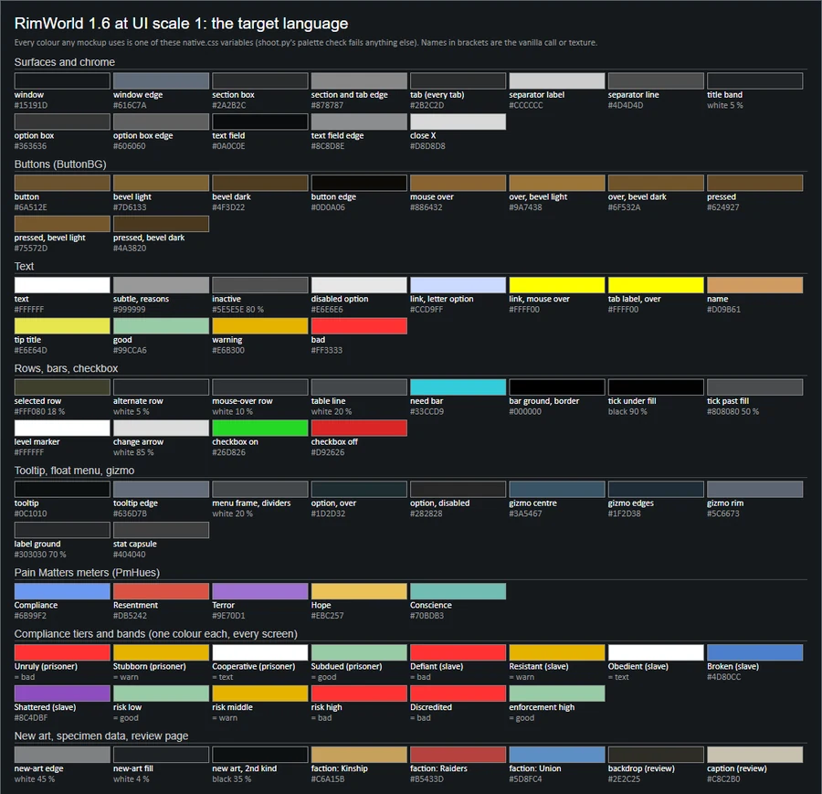
Open full sizeControls
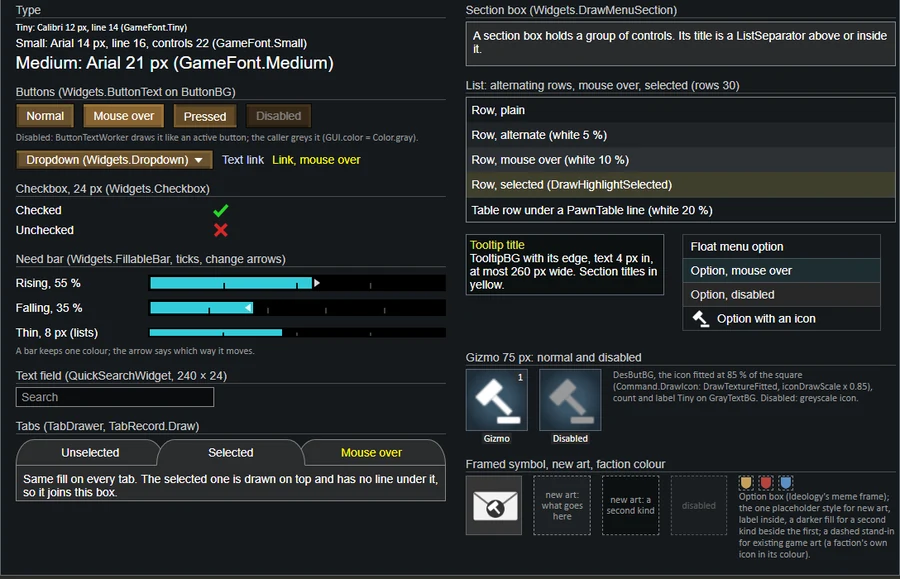
Open full size2. Where Pain Matters stands
How far does each surface stray today, and which strays matter most?
Each surface is scored on six axes, from 0, what vanilla would draw, to 3, foreign to RimWorld: a sum out of 18. Observed

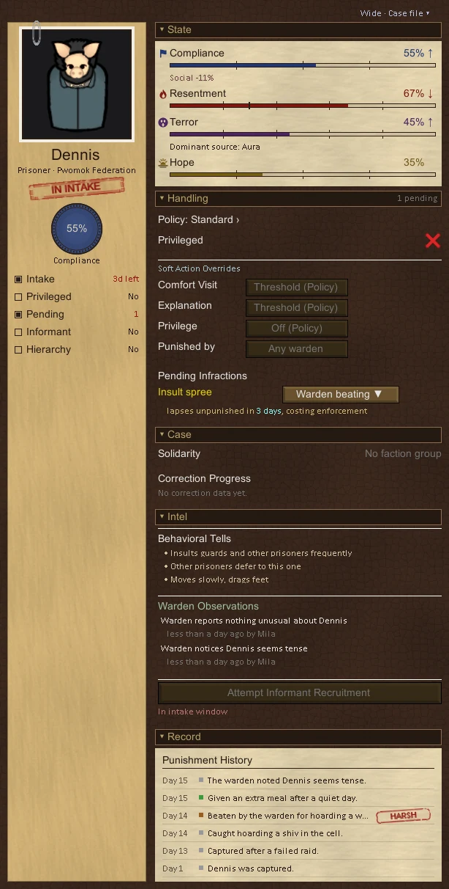
12345678910Open full size- 1Leather top stripVanilla window fill
- 2Manila paper sidebarVanilla window fill
- 3Paperclip on the portraitPortrait in a plain thin box
- 4Rotated "In intake" stampStatus line under the name
- 5Compliance medallionDropped; the bar already shows it
- 6Glyph checkboxesPlain label and value list
- 7Paper State card, dark inkLight text on dark, need bars
- 8Dark plates, gold labelsGrey label over a separator line
- 9Dark-plate dropdownsVanilla brown button
- 10"Harsh" stamp in the logPlain log rowHow severity shows: to confirm
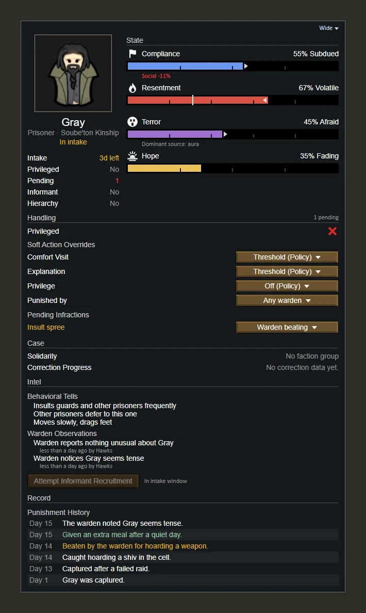
Open full sizeScroll the table sideways for all six scores.
| Rank | Surface, how often met | Skin | Palette | Type | Chrome | Controls | Density | Art | Sum of 18 |
|---|---|---|---|---|---|---|---|---|---|
| 1 | Conduct paneEvery time a captive is selected | Wide, Case file | 3 | 2 | 3 | 2 | 1 | 3 | 14 |
| Compact, Case file | 3 | 2 | 3 | 2 | 1 | 3 | 14 | ||
| Wide, Ledger | 1 | 1 | 1 | 1 | 1 | 2 | 7 | ||
| Compact, Ledger | 1 | 2 | 1 | 2 | 1 | 2 | 9 | ||
| Doer's toll on a colonist, Case file / Ledger | 31 | 12 | 31 | 11 | 22 | 31 | 13 / 8 | ||
| Lasting dread row, Case file / Ledger | 31 | 21 | 31 | 21 | 11 | 32 | 14 / 7 | ||
| 2 | Discipline OverviewDaily | Case file | 3 | 2 | 3 | 1 | 2 | 3 | 14 |
| Empty state, Case file / Ledger | 31 | 22 | 32 | 00 | 22 | 32 | 13 / 9 | ||
| Ledger | 1 | 2 | 2 | 1 | 2 | 2 | 10 | ||
| 3 | Captive badge and its menusEvery infraction | Badge | 2 | 0 | 2 | 1 | 0 | 2 | 7 |
| Response menu | 0 | 0 | 0 | 1 | 3 | 0 | 4 | ||
| Badge menu | 0 | 0 | 0 | 1 | 1 | 0 | 2 | ||
| 4 | Prisoners & Slaves listDaily | Simple view, Case file | 3 | 1 | 2 | 1 | 1 | 3 | 11 |
| Advanced view, Case file | 3 | 1 | 2 | 1 | 1 | 1 | 9 | ||
| Advanced view, Ledger | 1 | 0 | 1 | 1 | 1 | 0 | 4 | ||
| Simple view, Ledger | 1 | 0 | 1 | 1 | 0 | 0 | 3 | ||
| 5 | GambitsSeveral times a week | Tab, Case file | 3 | 1 | 2 | 1 | 2 | 2 | 11 |
| Confirm dialog, Case file | 3 | 1 | 2 | 0 | 1 | 1 | 8 | ||
| Tab, Ledger | 1 | 1 | 1 | 1 | 2 | 2 | 8 | ||
| Confirm dialog, Ledger | 1 | 1 | 1 | 0 | 1 | 0 | 4 | ||
| Gambit menu | 0 | 0 | 0 | 1 | 1 | 0 | 2 | ||
| Gambit letter | 0 | 0 | 1 | 0 | 0 | 0 | 1 | ||
| 6 | InformantsWeekly, mid-game | Window, Case file | 3 | 1 | 2 | 1 | 1 | 2 | 10 |
| Recruit dialog, Case file / Ledger | 31 | 11 | 21 | 12 | 11 | 00 | 8 / 6 | ||
| Window, Ledger | 1 | 1 | 1 | 2 | 1 | 2 | 8 | ||
| Gizmos and letters | 0 | 0 | 0 | 0 | 0 | 1 | 1 | ||
| 7 | Wardens sub-tabOccasionally | Case file | 3 | 1 | 2 | 2 | 1 | 3 | 12 |
| Ledger | 2 | 1 | 1 | 2 | 1 | 3 | 10 | ||
| 8 | LettersEvery verdict and escape | Verdict, escape, exposure, unrest | 0 | 0 | 0 | 0 | 0 | 2 | 2 |
| 9 | Settings windowRarely | Case file | 2 | 1 | 2 | 1 | 1 | 1 | 8 |
| Ledger | 1 | 1 | 2 | 2 | 1 | 0 | 7 | ||
| 10 | Near vanilla alreadyRarely | Hierarchy window and map lines | 1 | 0 | 0 | 0 | 1 | 1 | 3 |
| Network sub-tab | 1 | 0 | 0 | 0 | 0 | 0 | 1 | ||
| Policy editor | 0 | 0 | 0 | 1 | 0 | 0 | 1 | ||
| Fear and meter overlays | 1 | 0 | 0 | 0 | 0 | 0 | 1 | ||
| Vanilla, not ranked | Top strip: credibility, tabs, filters | 0 | 0 | 0 | 0 | 0 | 0 | 0 | |
| Alerts and messages | 0 | 0 | 0 | 0 | 0 | 0 | 0 | ||
| Chapter gizmos, inspect text, buildings | 0 | 0 | 0 | 0 | 0 | 0 | 0 | ||
| Building rings, Needs rows, locked-response tooltip | 0 | 0 | 0 | 0 | 0 | 0 | 0 |
- 0Vanilla
- 1Unusual arrangement
- 2Visible departure
- 3Foreign to RimWorld
- Split cell: Case file, then Ledger
Rescored on 2026-11-10 against new captures; no rank moved. Observed
3. Conduct pane
What changes on the pane players see most, and does it still look like RimWorld?

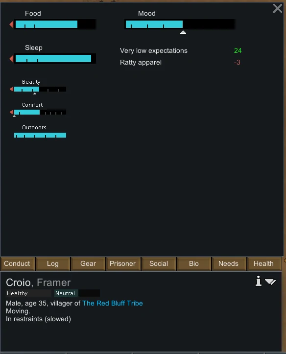
Open full size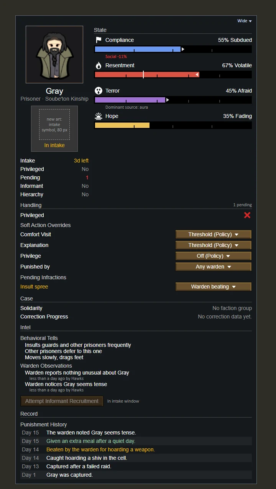
7Open full size- 1Paper and leather fills give way to vanilla's blue-black window. Proposed
- 2The rotated status stamp becomes a status line under the name.
- 3The compliance medallion goes; the bar shows it.
- 4Dark plates with gold labels become vanilla separators.
- 5Meters become need bars with change arrows.
- 6Dropdowns become vanilla's brown buttons.
- 7B only: one framed symbol for the captive's state.
| B's touch | One large framed symbol, from Ideology's meme boxes: an 80 px symbol for the captive's state, under the portrait |
|---|---|
| New art | One 80 px symbol per state: intake, privileged and broken at least |
| Cost | A: a few days. B: a day or less more, once the art exists |
| Minimal mode | Meters read "Sealed"; B's symbol shows in every mode |
| Your call | A or B. Also open: which states get a symbol |
What stays, what goes, and the need-bar ticks
Kept. The two columns, every reading and handling control, the case, intel and record sections, and the log. The Wide and Compact layouts stay: they are widths, not looks. Proposed
Moved. The skin switch goes. The layout switch becomes a "Wide" link with a menu at the top right. The status pips become a short list under the portrait.
Need-bar ticks. Vanilla draws a need bar's ticks in a dark grey that is faint on black. Mockup A keeps them faint. Should Pain Matters draw them lighter? Observed
4. Discipline Overview
Does the front page read as a RimWorld window?

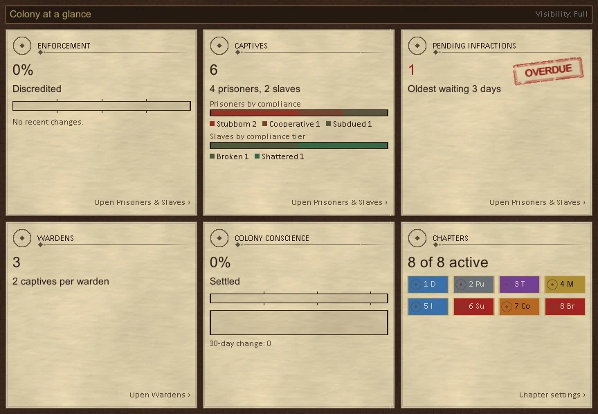
Open full size
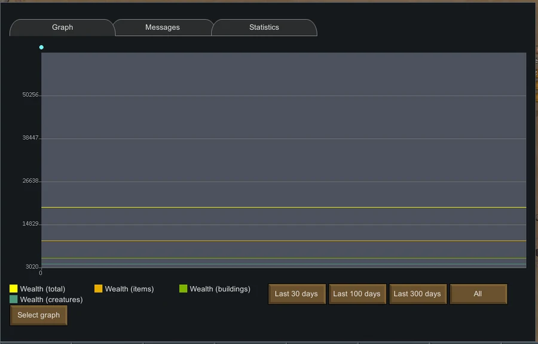
Open full size
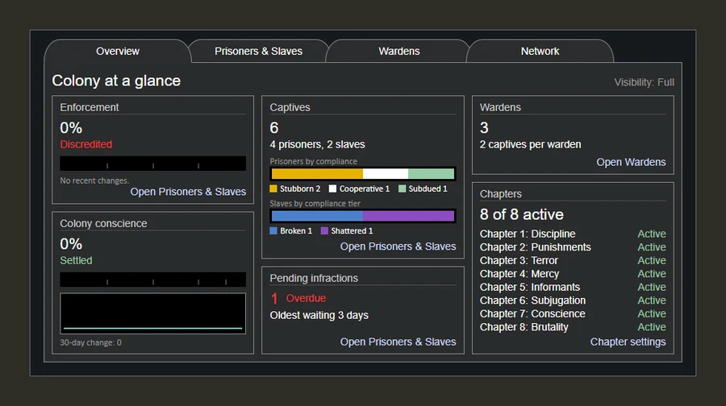
Open full size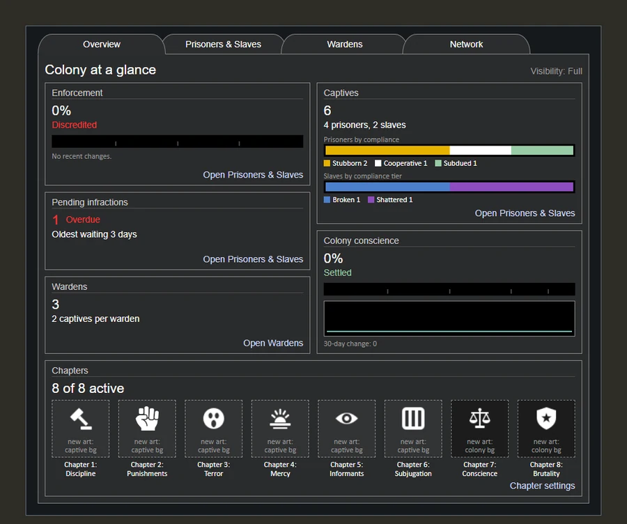
Open full size- Paper tiles on leather become vanilla section boxes. Proposed
- The emblems on the tiles go.
- The "Overdue" stamp box becomes red text beside the number.
- Tiles become three columns, each as tall as its content.
- A: the eight chapter chips become eight text rows.
- B only: the chapters become a band of eight typed tiles.
| B's touch | Typed tiles with background art, from Biotech's gene tiles. The background marks whether a chapter acts on captives or on the colony |
|---|---|
| New art | Two 90 px tile backgrounds. Pain Matters has no chapter icons, so the mockup borrows the closest ones |
| Cost | A: a day or less. B: a few days more |
| Minimal mode | What today's Overview hides, A and B hide; not checked tile by tile |
| Your call | A or B. Also open: is captive or colony the split the tiles should show |
What stays
The six tiles stay, with every number, caption and link, and the conscience graph. A is cheap because the Ledger skin already draws these tiles. Proposed
5. Captive badge and its menus
Where should "who knows" live?


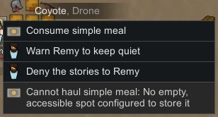
Open full size
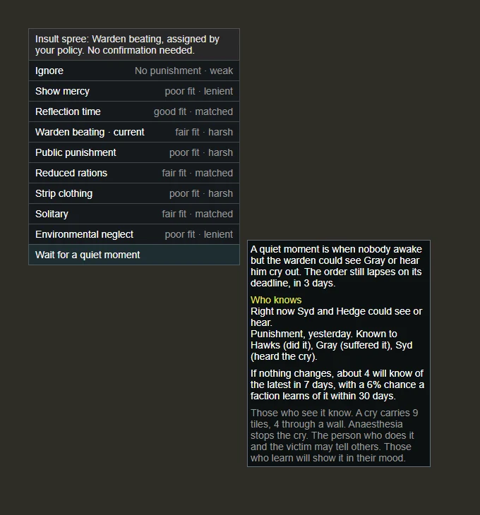
Open full size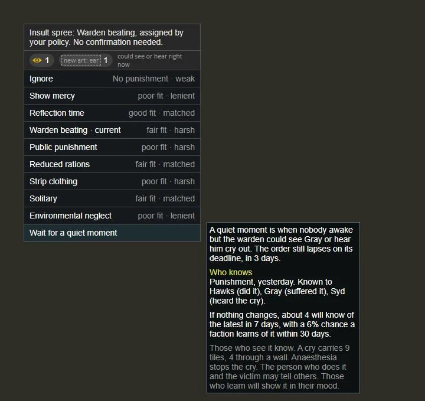
Open full size
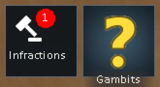
Open full size
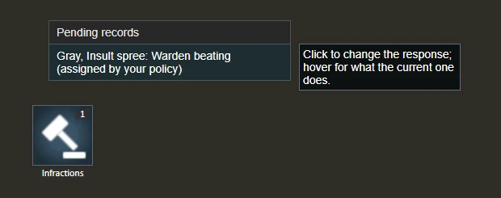
Open full size- The gavel fills the gizmo square, as vanilla icons do. Proposed
- The count and label sit on vanilla's grey label backing.
- The fit line and greyed secrecy lines leave the menu.
- Secrecy facts move to a "Who knows" tooltip.
- Fit marks like [***] become words: good, fair or poor fit.
- B only: a capsule strip counts who could see or hear right now.
| B's touch | A capsule stat strip, from Biotech's biostat capsules. Ludeon's own, but not one of the seven touches |
|---|---|
| New art | An 18 px ear glyph; the eye is the mod's Informants icon |
| Cost | A: a day or less. B: a few days more |
| Minimal mode | Who knows stays hidden, so B's strip would not draw |
| Your call | A or B. Also open: counts or names, and fit words or icons |
The gizmo bar, the tooltip and one assumption
The strip shows the response menu. The gizmo itself sits in the bar at the bottom of the screen: today its black fill reads as a hole beside the blue Gambits gizmo. Observed

The mockup shows "Ignore" with the verdict word "weak". That assumes no response falls in the weakest band; the code should confirm it. Assumed
6. Prisoners and Slaves list
The list is already vanilla in shape; what is left to change?

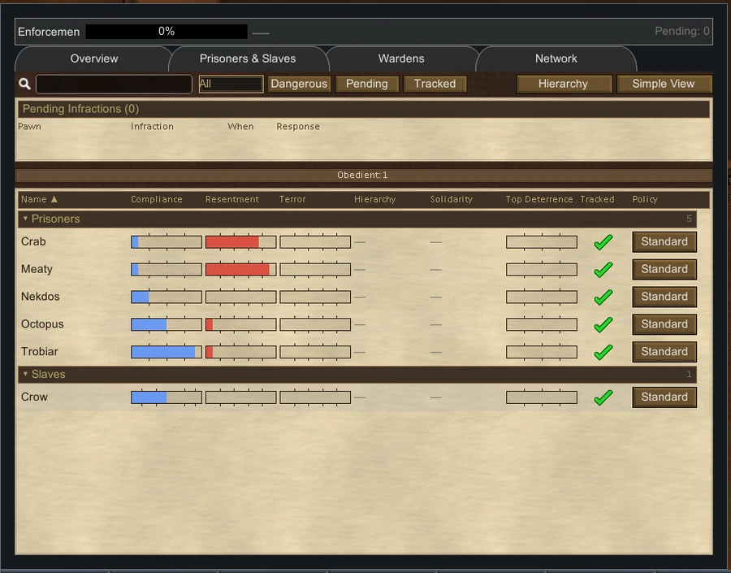
Open full size
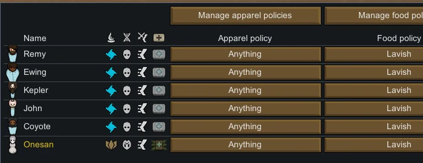
Open full size
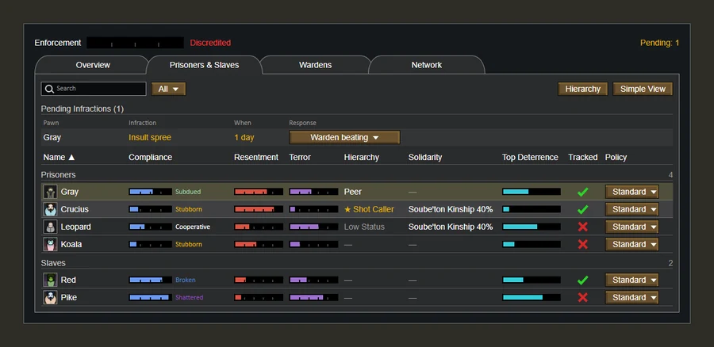
Open full size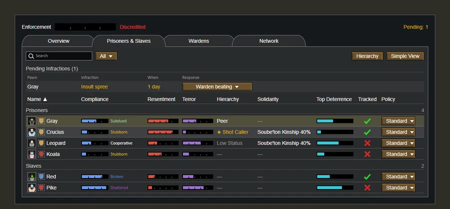
Open full size
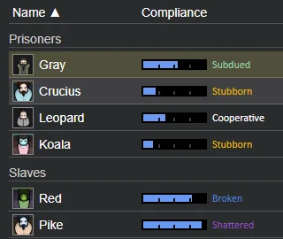
Open full size
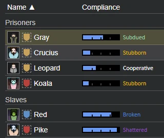
Open full size- The paper body becomes vanilla's window fill. Proposed
- The tier band goes; tier words sit by the bars.
- Header plates become vanilla separators.
- Four filter buttons become one dropdown.
- A 24 px pawn icon leads each row, as in the Animals tab.
- B only: each captive's faction icon, in the faction's colour.
| B's touch | Accent colour on icons only, from Ideology's symbol and colour picker. The colour is faction data, never a game state |
|---|---|
| New art | None: the game draws each faction's own icon. The mockup can't copy Ludeon's icons, so one shield stands in |
| Cost | A: a few days. B: a day or less more |
| Minimal mode | No Advanced view; B's faction icon is public, so it shows in every mode |
| Your call | A or B. Also open: should the middle tiers stay plain text |
Tier colours, and the Simple view
The Simple view strays further than the Advanced one, 11 against 9: it stamps a status badge on every row. The mockups draw the Advanced view. Observed
Unruly, Stubborn and Subdued take vanilla's bad, warning and good colours. Cooperative and Obedient carry no colour. Broken and Shattered keep Pain Matters' blue and purple. Proposed
7. Gambits
Can the cards lose their skin art and keep what matters?

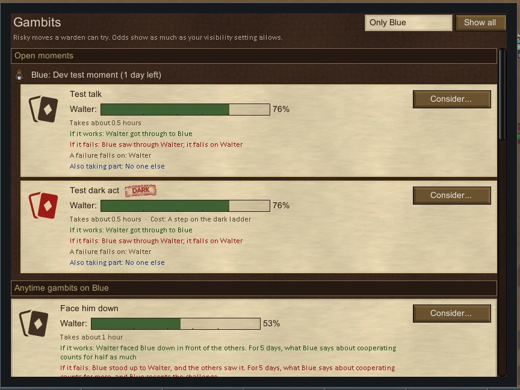
Open full size
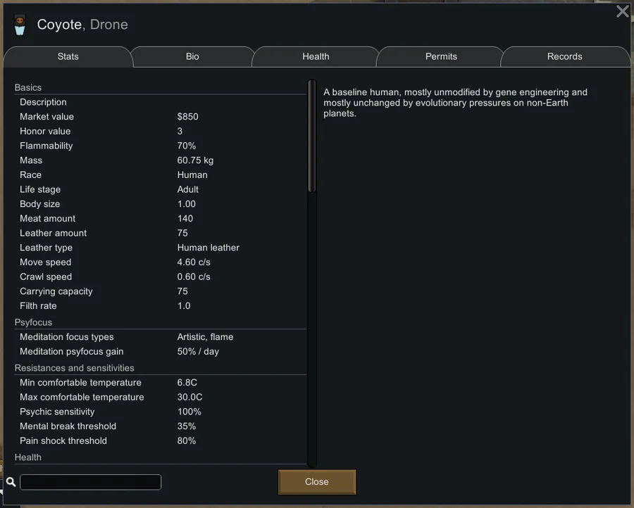
Open full size
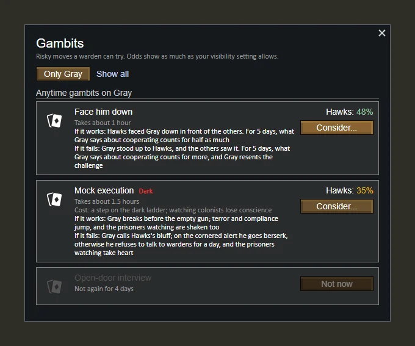
Open full size
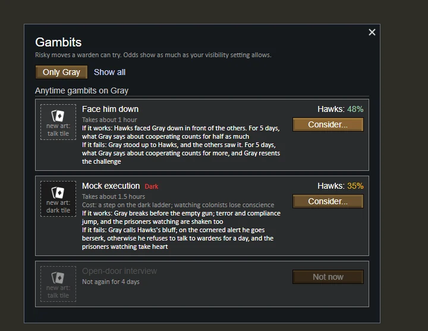
Open full size
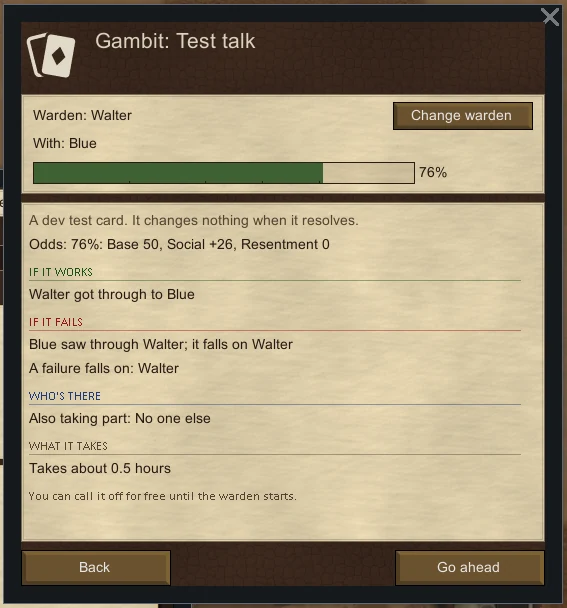
Open full size
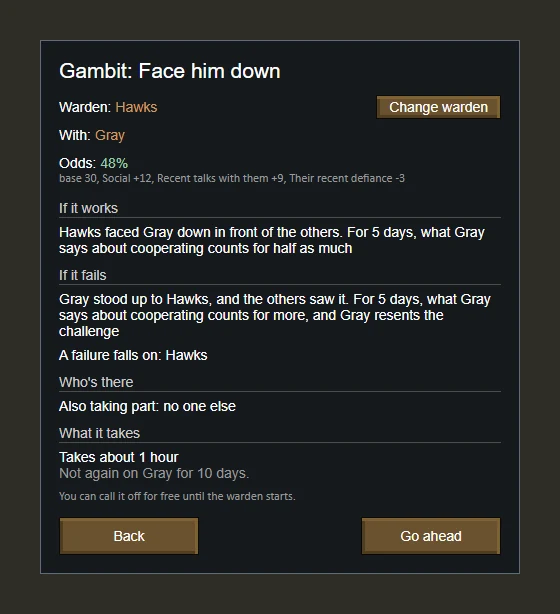
Open full size- Each card's skin frame becomes a vanilla section box. Proposed
- Both outcomes stay written on the card.
- The odds stay text, the warden's own figure.
- The dialog takes a vanilla message box's shape.
- The dialog's odds terms move to a small grey line.
- B only: a typed tile behind each icon, talk or dark act.
| B's touch | Typed tile with background art, from Biotech's gene backgrounds. The "Dark" word stays |
|---|---|
| New art | Two 60 px tile backgrounds: talk and dark |
| Cost | A: a day or less. B: a day or less more, once the art exists |
| Minimal mode | Odds that hang on a hidden reading read "Odds uncertain" |
| Your call | A or B. Also open: outcomes on the card, or in a tooltip |
Where the mockup departs from the scorecard
The scorecard proposed a list with the outcomes in tooltips. The mockup keeps them on the card: they are what the player decides on. Proposed
8. Informants
With two to four informants, what layout reads fastest?

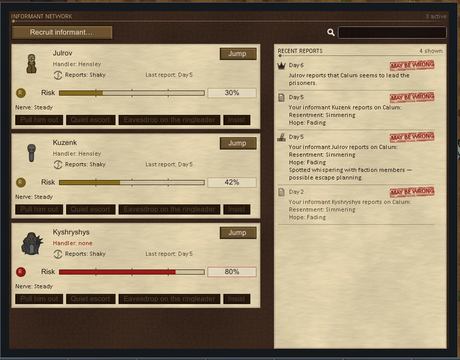
Open full size
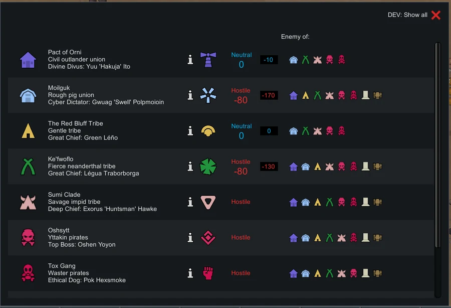
Open full size
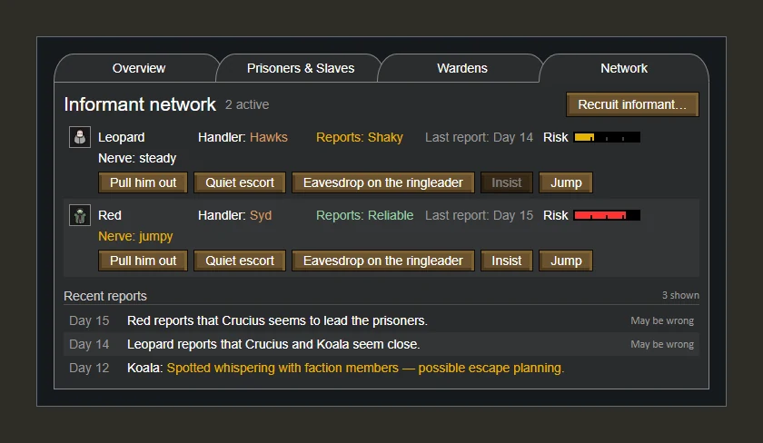
Open full size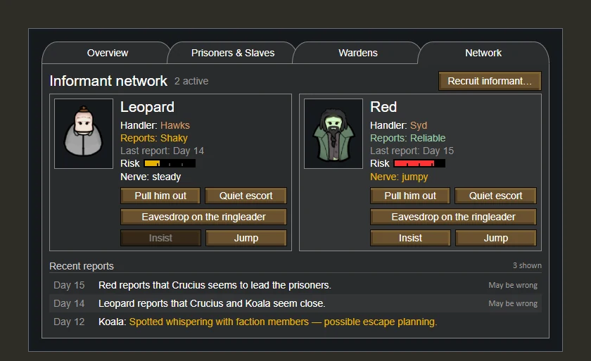
Open full size
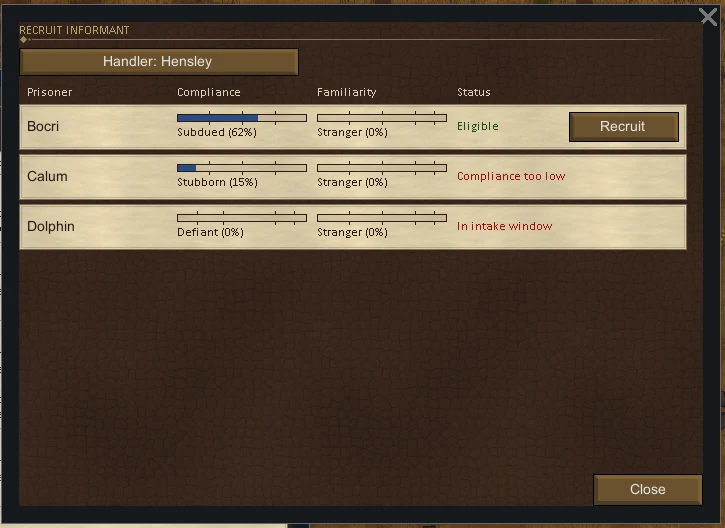
Open full size
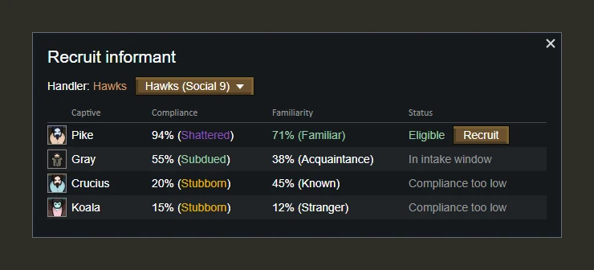
Open full size- The cards' stamps and paper go. Proposed
- Every informant stays an open row.
- Risk is a thin bar in its band's colour.
- The recruit dialog's first column reads "Captive".
- The recruit dialog closes with vanilla's X at the top right.
- B only: each informant as a catalogue card with a portrait.
| B's touch | The catalogue card, from Anomaly's entity codex: portrait, name, facts and actions |
|---|---|
| New art | None; a new card drawer |
| Cost | A: a day or less. B: a few days more |
| Minimal mode | The network is hidden, in A and B alike |
| Your call | A or B. Also open: open rows, or a list with one informant's detail |
New wording in the report feed
The escape-planning feed row needs a subject, such as "Koala:". How today's feed names it should be checked before building. Proposed
9. Verdict letter
Should the verdict letter keep an emblem, and can it lose the stamp?

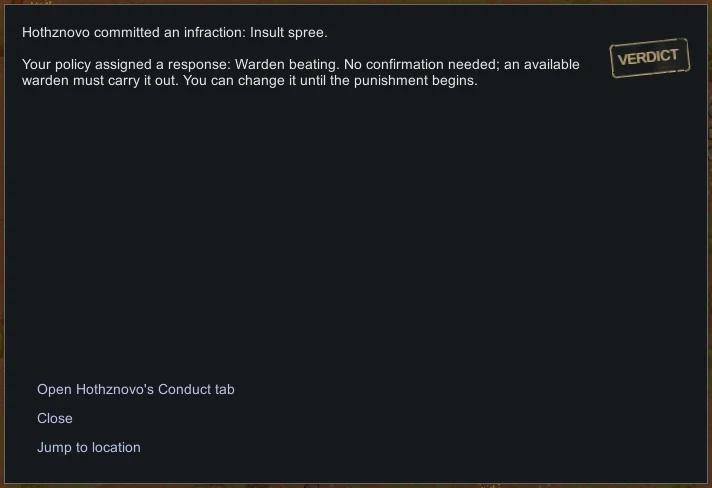
Open full size
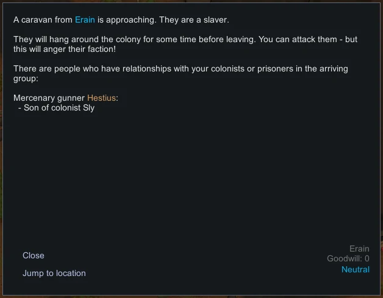
Open full size
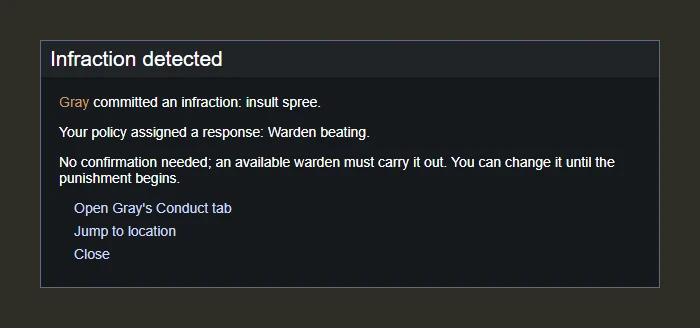
Open full size
- The rotated stamp goes. Proposed
- A drops the emblem column: a plain vanilla letter.
- B keeps the column, with an upright 72 px verdict symbol.
- B puts the word "Verdict" under the symbol, in small type.
| B's touch | One framed symbol, from Ideology. Vanilla letters have no emblem column, so the column is Pain Matters' own |
|---|---|
| New art | None: today's verdict art |
| Already built | The gambit letter: an upright card, no stamp |
| Cost | A day or less, for either |
| Minimal mode | The same; the letter names no hidden reading |
| Your call | A or B |
10. Concept art
What would mockup B look like painted?
11. What the skin library would become
If one native look replaces both skins, what goes, what stays, and what does it cost?
The mod ships two skins, Case file and Ledger. The review proposes one native skin instead. Proposed
| Fate | What | Instead |
|---|---|---|
| Retire | The Case file skin: leather, manila and paper fills, card frames, the paperclip, the wax seal and stamped text | Vanilla window fill. Most of the mod's 60 UI textures go; saved settings naming Case file need a fallback |
| Retire | Letter-spaced small caps and the diamond rule | Vanilla separators |
| Retire | Dark plates with gold labels, on headers and buttons | Separators and vanilla buttons |
| Retire | The meters' ease and flash animation | Bars jump to their value, as vanilla's do; change arrows show the trend |
| Keep, restyled | The meters | Need bars, one colour per meter |
| Keep, restyled | The meaning colours | Paper tones go; good, bad and warning match vanilla |
| Keep, restyled | Collapsible group headers, search, the odds bar | Vanilla's arrows, quick search and fillable bar |
| Keep, restyled | The letter's emblem column | Upright symbol only |
| Keep | Surface emblems and the six meter glyphs | 24 to 32 px icons, the one place the mod's own art shows |
Rough cost. Moderate: Ledger already draws every skinned surface, so most work is deleting Case file's branches. Assumed
12. What we need from you
Which mockup for each screen, one skin or two, and the open questions?
Every choice below is open. Tap a screen for its section. Proposed
| Screen | Today | Mockup A | Mockup B | Pick |
|---|---|---|---|---|
| Conduct pane | 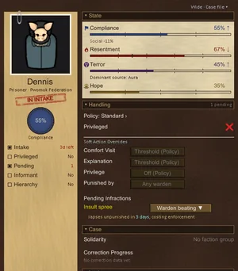 Open full size | Open full size | Open full size | A or B, open |
| Discipline Overview | 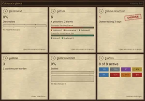 Open full size | 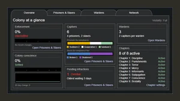 Open full size | Open full size | A or B, open |
| Captive badge and its menus | 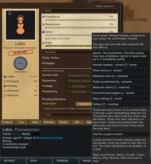 Open full size | Open full size | Open full size | A or B, open |
| Prisoners and Slaves list | 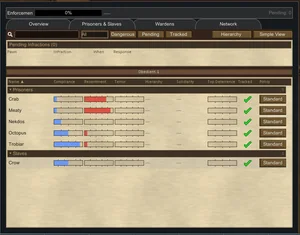 Open full size | 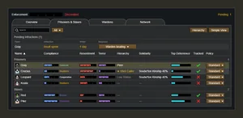 Open full size | Open full size | A or B, open |
| Gambits | 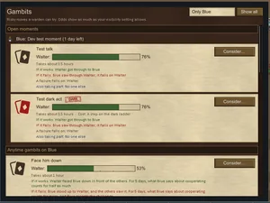 Open full size | Open full size | Open full size | A or B, open |
| Informants | 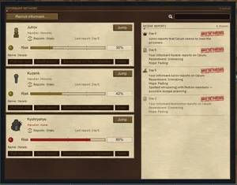 Open full size | Open full size | Open full size | A or B, open |
| Verdict letter | Open full size | Open full size | Open full size | A or B, open |
| One native skin | Retire Case file and Ledger's plates for one look | Yes, no or later; open | ||
| Question the mockups left open | Screen |
|---|---|
| 1. Gambit outcomes: on each card as drawn, or in its tooltip for a shorter list? | Gambits |
| 2. Informants: open rows as drawn, or a list with one informant's detail, for large networks? | Informants |
| 3. Captive state symbol: which states get one, and is the meme-box frame the right weight? | Conduct pane |
| 4. Who knows: counts in a capsule strip, or names only in the tooltip? | Captive badge |
| 5. Chapter tiles: is captive or colony the split that matters, or on, off and dark? | Overview |
| 6. Tier colours: is plain text right for Cooperative and Obedient? | Prisoners |
| 7. Fit words: "good fit", "fair fit", "poor fit", or icons? | Captive badge |
Open items
What wasn't captured or drawn, and when is this page out of date?
| Item | Why it matters | How it closes |
|---|---|---|
| Settings window not drawn | The eighth screen; players open it rarely | Mock it after the seven picks |
| Hierarchy, policy editor, Network and overlays not mocked | Already near vanilla, scoring 1 to 3 | Check them under the native skin |
| Reduced modes not drawn | The mockups show Full mode; each section names what Minimal shows | Draw Minimal for the picked mockups |
| Surfaces the capture run couldn't set up | Among them the hierarchy window, informant gizmos and letters, and the Network tab with informants | A later capture run |
| Each skin captured in a different colony | Names and values differ between a Case file and a Ledger pair | A repeatable capture of both skins |
| Vanilla's message box and Anomaly's entity codex not captured | Figures 9 and 10 show the nearest captured windows instead | Capture both |